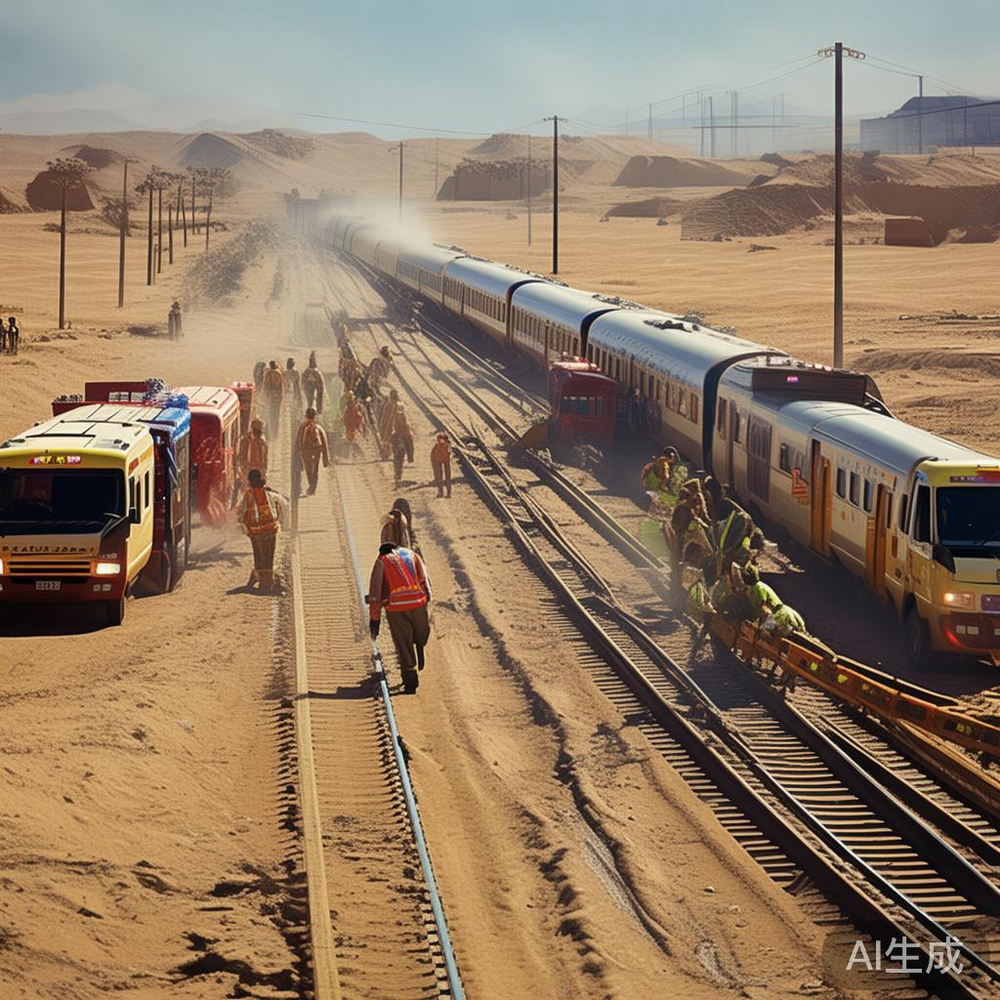
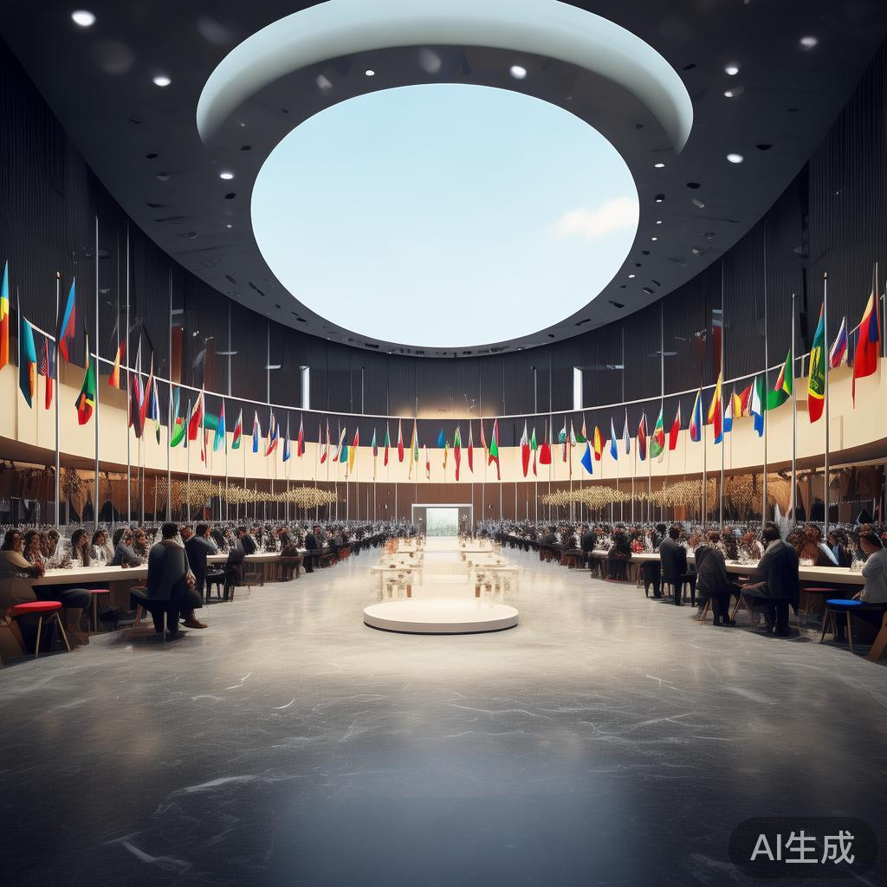
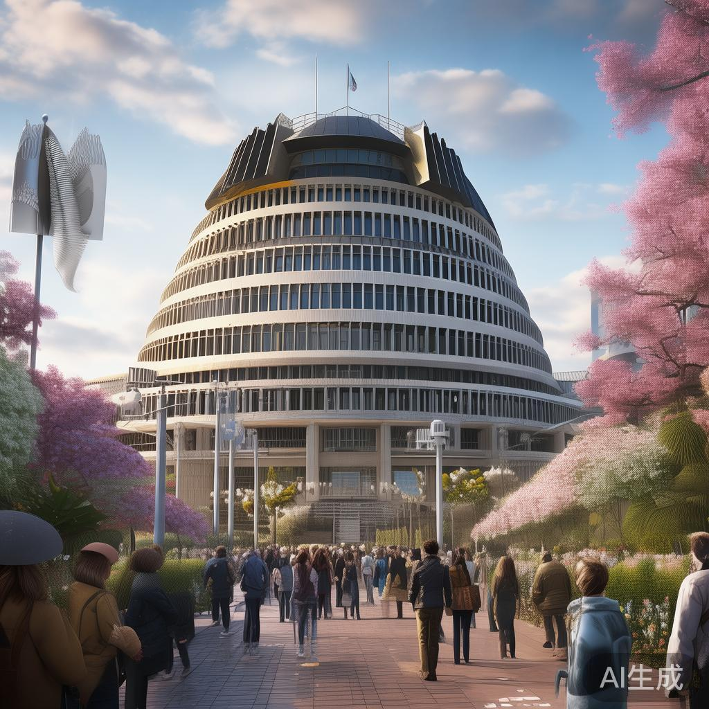
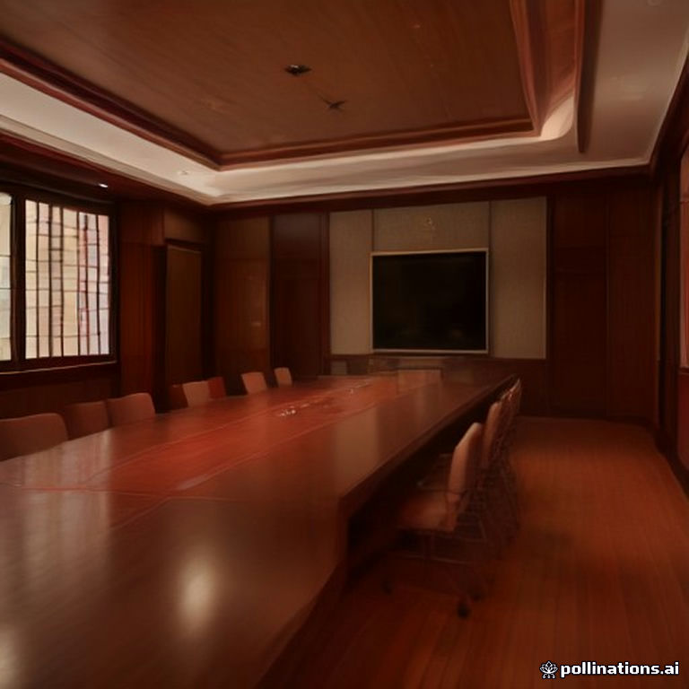
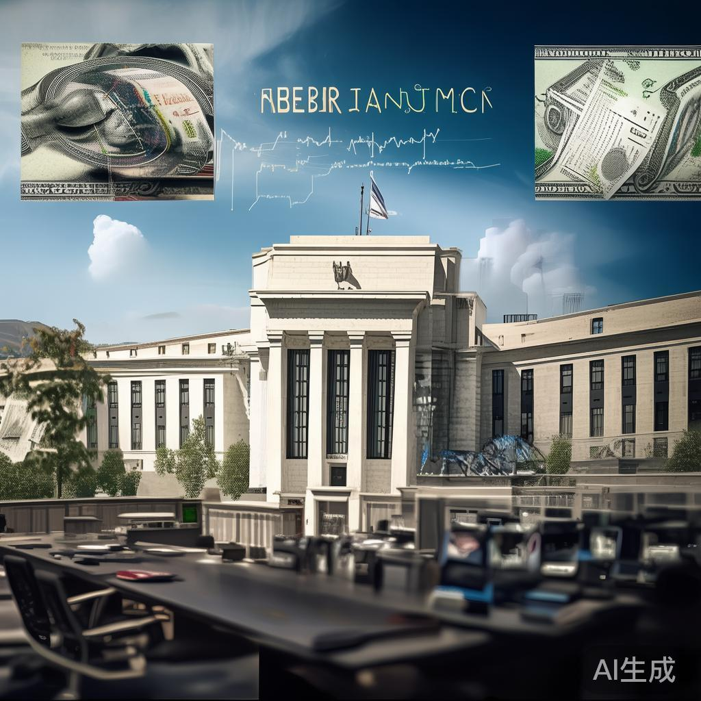
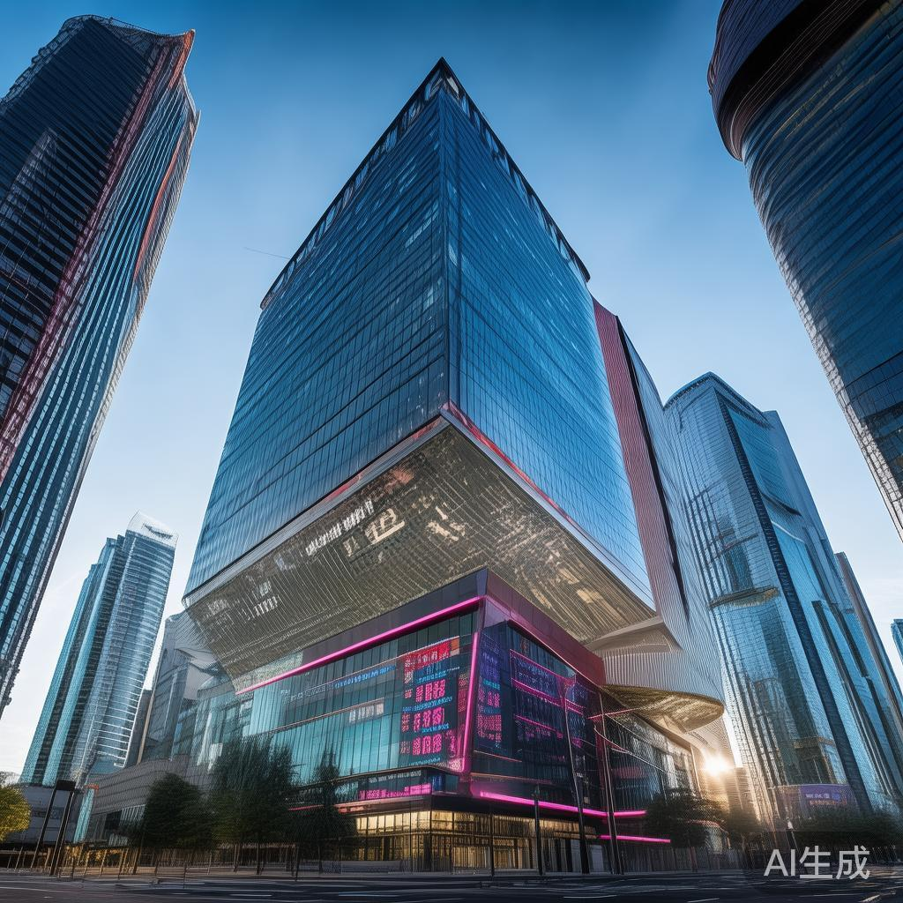
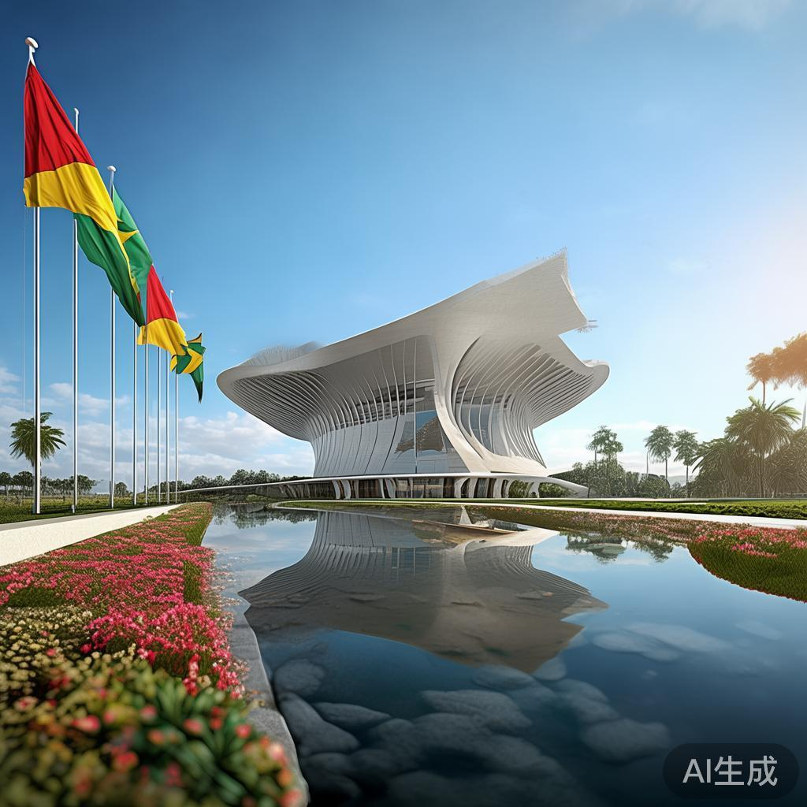
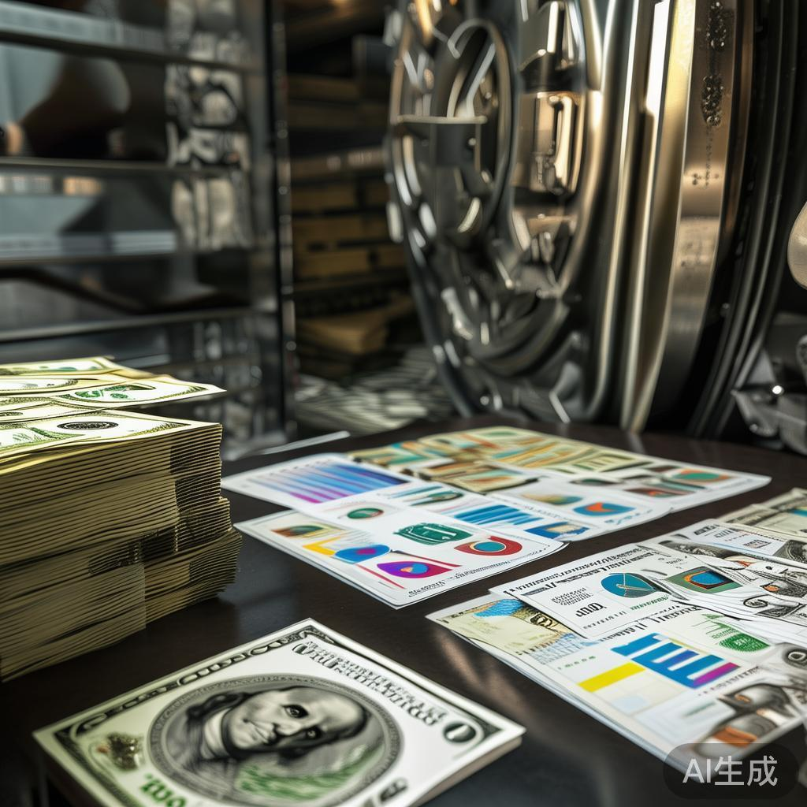
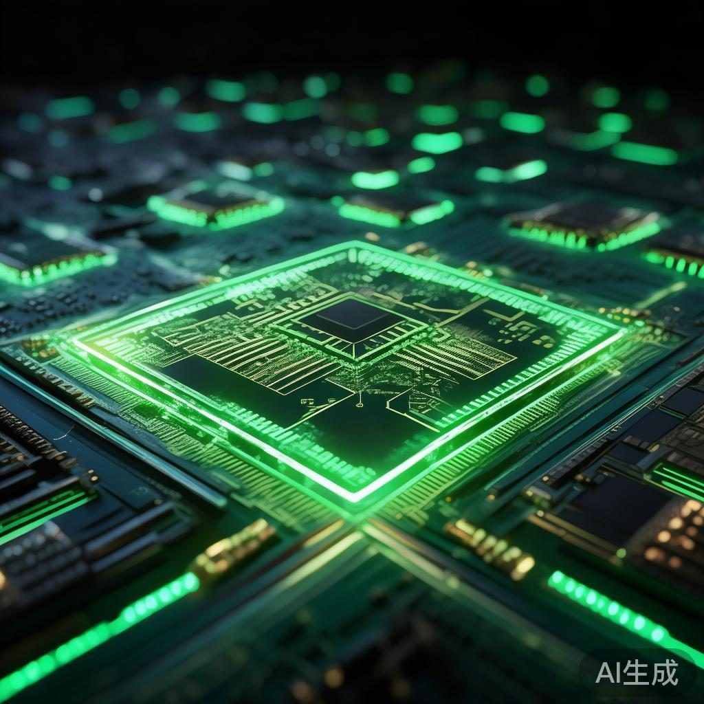

01
埃及吉萨列车相撞事故已致7死112伤
埃及卫生部发表声明说，吉萨省8日发生客运列车相撞事故，死亡人数已升至7人，受伤人数升至112人，伤者已被紧急送往附近医院救治，事故具体原因仍在调查中。
国际

埃及卫生部发表声明说，吉萨省8日发生客运列车相撞事故，死亡人数已升至7人，受伤人数升至112人，伤者已被紧急送往附近医院救治，事故具体原因仍在调查中。
特朗普在“真实社交”发文表示，针对伊朗的“铁门”特遣行动正全面展开，叠加其所称“史上最大规模海上封锁”，目前几乎无物资能进出伊朗；他还称“我们在伊朗赢了，现在只是结束它的问题”。

第31届联合国气候变化大会于11月9日至20日举办。新西兰前总理在会前专访中呼吁，气候危机是经济和国家安全议题，应从边缘议题走向政策制定的核心。
欧洲央行行长拉加德接受日本《读卖新闻》采访时暗示，央行有可能在下个月的管理委员会会议上再次加息，称未来几个季度的通胀数据仍将居高不下，对物价上涨表达危机感。

新西兰执政党国家党在周末议会选举中处于领先位置，有望继续执政。新西兰元兑美元一度上涨0.51%至0.5572美元，从上周触及的一年多低点反弹。
立陶宛新政府今年7月上台以来，政坛不断出现呼吁改善对华关系的声音。立陶宛议员扬库纳斯日前撰文称，新政府必须推动对华关系正常化，并批评前任政府的对华政策。

国务院常务会议部署完善资本市场稳市机制，增强股市内在稳定性，释放出明确的呵护市场政策信号，本周资本市场政策预期持续升温。

美国公布的10月非农就业数据大幅超出市场预期，交易员加大了对美联储12月加息的押注。同日AI概念股止跌反弹，纳指上周五收涨1%，但仍难逃周线四连跌。
多家券商官宣增持A股股票和ETF，瑞银、高盛、大摩持仓A股名单公布；中国央行连续第24个月增持黄金；中国台湾实施卖空限制以支撑股市，区域市场护盘动作密集。

深交所修订创业板指数编制方案，将单只样本股权重上限逐步调整至15%，旨在降低指数对个股的集中度依赖，提升指数的代表性与稳定性。

巴西总统卢拉表示高利率令他担忧，重申对财政责任的承诺，称将在遵守财政规则的前提下竭尽全力，工作将聚焦经济增长，并创造降低利率的条件。

巴菲特旗下伯克希尔公布三季度业绩：运营利润小幅下滑，回购规模为年内最高，现金储备攀升至3774亿美元；前五大持仓占总持仓达65%，集中度依然高企。
OpenAI新一轮融资首批110亿美元已经到账，估值达1.25万亿美元。OpenAI CFO表示数据中心投资不会因中期选举改变；微软则据悉逐步终止从甲骨文租用AI云算力。

英伟达CEO黄仁勋承认婚外情，美国国会介入关注。特朗普回应称黄仁勋是个“好人”，认为他应该继续担任英伟达CEO，并表示自己还没有与他交谈过。
苹果研究团队披露机器人“大脑”研究进展，在单项任务测试中平均成功率达到91%，苹果在具身智能领域的研发路线图进一步清晰。
台积电拟进军先进内存芯片制造领域，应英伟达要求布局3D DRAM。存储与逻辑先进制程加速融合，AI算力需求正重塑全球晶圆代工与存储产业格局。
受冷空气影响，预计11月9日上午到10日上午，东海、台湾海峡、南海北部、北部湾将出现3到5.5米的大浪到巨浪区，海南东部、南部近岸海域海浪预警级别为黄色。
山西太原万柏林区育华小学一则无薪酬招聘跟岗教师的公告引发轩然大波。调查显示“无薪酬跟岗”并非个案，“倒贴上班”背后的就业焦虑与职业选择值得关注。
21岁的医疗护理员夏米佳在上海市公安局浦东分局高桥派出所领到了崭新的户口簿。作为一线照护者，她通过落户通道留在这座城市，“照护城市的人也被城市托举”。
国家广播电视总局部署开展新一轮微短剧专项治理工作，治理为期两个月，微短剧行业规范化进程持续推进，内容生态治理再度加码。
💬 评论区